A continuación puede ver los miembros del grupo en el proyecto ministerial actualmente vigente. Es necesario insistir, no obstante, en que la labor científica realizada es fruto de la colaboración de personas que en otros momentos también pertenecieron al grupo, así como de una importante cantidad de colaboradores externos, como puede verse si se consulta la bibliografía de PROLOPE.
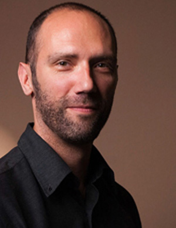
Gonzalo Pontón
Investigador principal
UAB
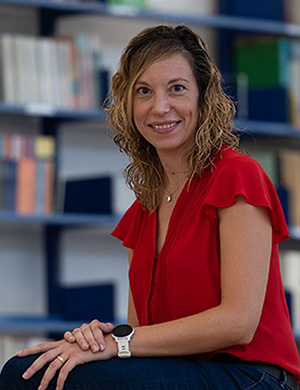
Sònia Boadas
Comité científico
Univ. di Bologna
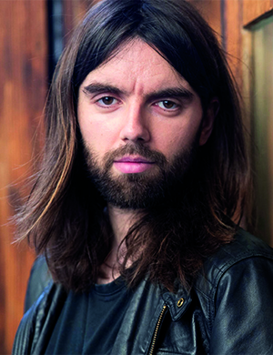
Daniel Fernández
Comité científico
Univ. de València
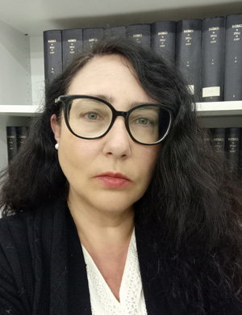
Laura Fernández
Comité científico
UAB
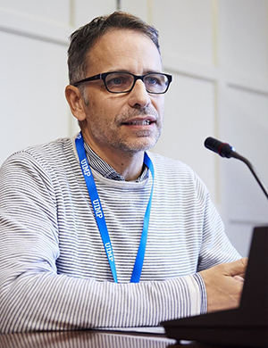
Ramón Valdés
Comité científico
UAB
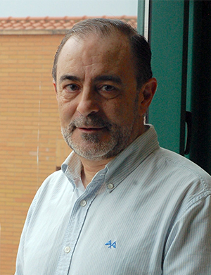
Pedro Conde
Investigador
Univ. de Valladolid
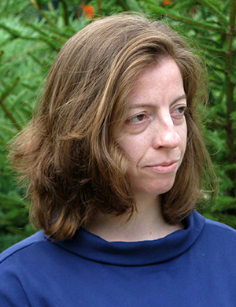
Carme Font
Investigadora
UAB
Miguel Maron García-Bermejo
Investigador
Univ. de Salamanca
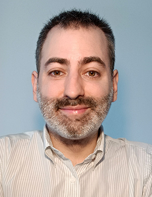
Guillermo Gómez
Investigador
UCM
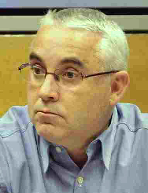
José Enrique Laplana
Investigador
Univ. de Zaragoza
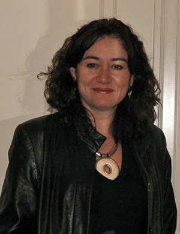
Isabel Muguruza
Investigadora
UPV / EHU
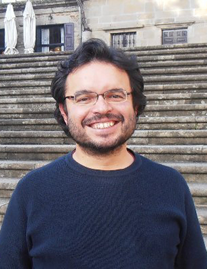
Fernando Rodríguez-Gallego
Investigador
UIB
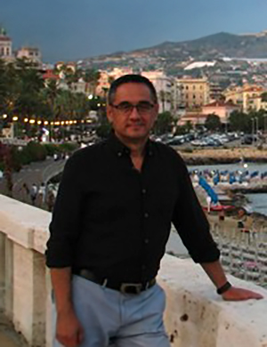
Luis Sánchez Laílla
Investigador
Univ. de Zaragoza
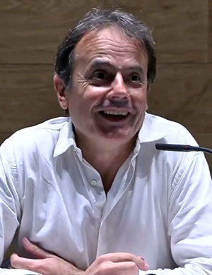
Eduard Vilella
Investigador
UAB
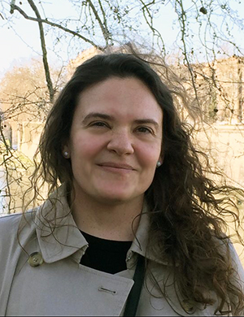
Susanna Allés
Equipo de trabajo
Univ. of Miami
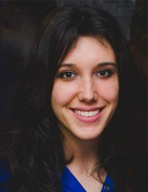
Rosa Bono
Equipo de trabajo
UAB
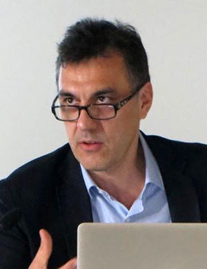
Christophe Courderc
Equipo de trabajo
Univ. Paris Nanterre
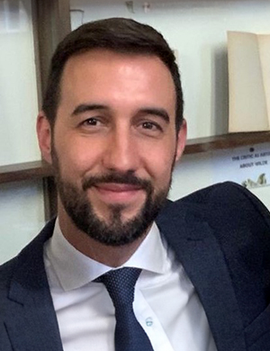
Daniele Crivellari
Equipo de trabajo
Univ. di Salerno
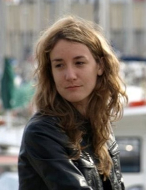
Florence D'Artois
Equipo de trabajo
Univ. Paris-Sorbonne
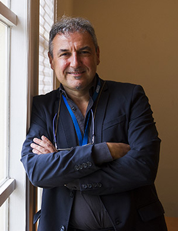
Enrico Di Pastena
Equipo de trabajo
Univ. di Pisa
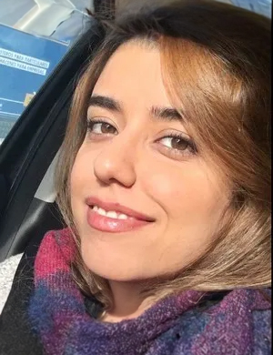
Khatereh Gorji
Equipo de trabajo
UAB
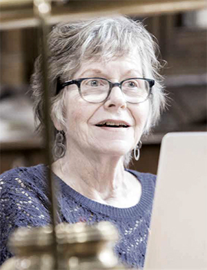
Margaret Greer
Equipo de trabajo
Duke University
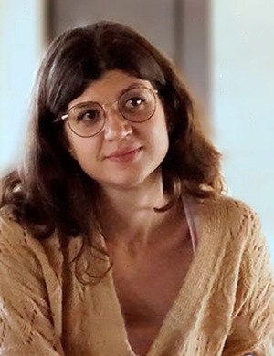
Arantxa Llàcer
Equipo de trabajo
Univ. di Trento
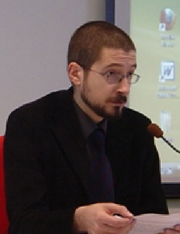
Eugenio Maggi
Equipo de trabajo
Univ. di Bologna
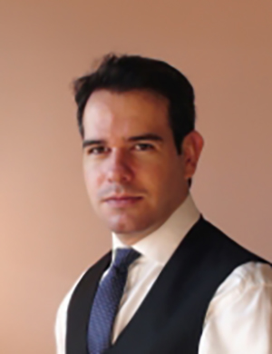
Carlos Peña
Equipo de trabajo
UAB
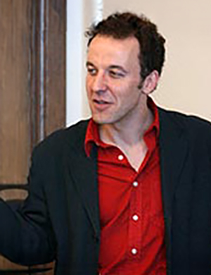
Fernando Plata
Equipo de trabajo
Colgate University
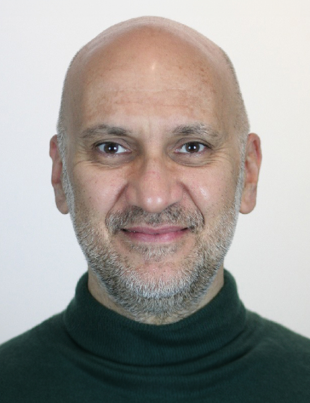
Marco Presotto
Equipo de trabajo
Univ. di Trento
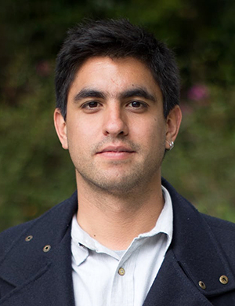
Santiago Restrepo
Equipo de trabajo
Univ. de Los Andes
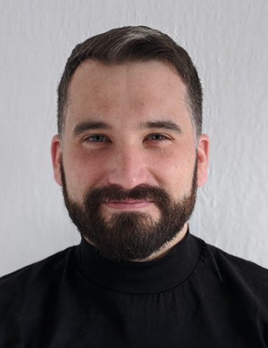
Antonio Rojas-Castro
Equipo de trabajo
BBAW, Berlín
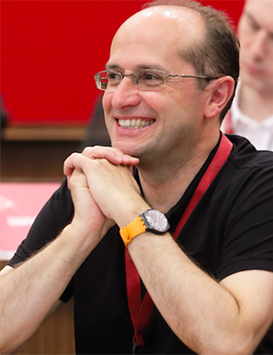
Javier Rubiera
Equipo de trabajo
Univ. de Montréal
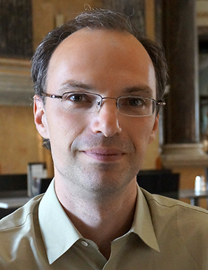
Antonio Sánchez Jiménez
Equipo de trabajo
Univ. de Neuchâtel
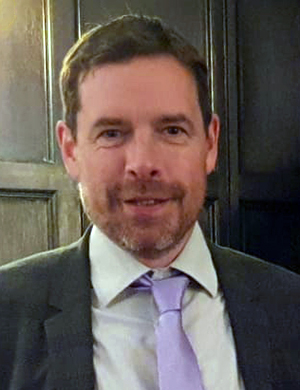
Jonathan Thacker
Equipo de trabajo
Univ. of Oxford
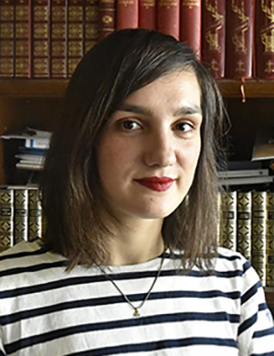
Ane Zapatero
Equipo de trabajo
UPV / EHU